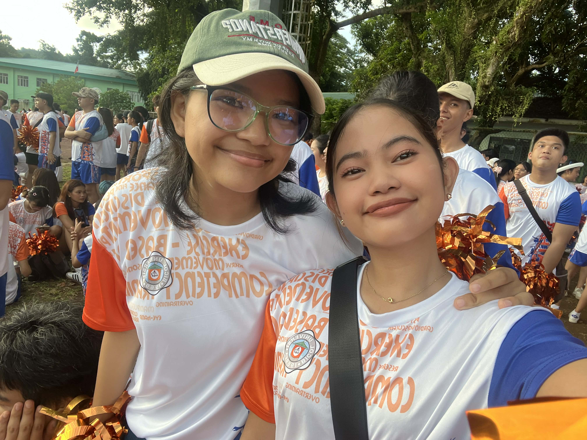

THEIR GOALS
Every idea is thoughtfully planned and carefully executed. Our goal is to create something meaningful, authentic, and impactful.

Every idea is thoughtfully planned and carefully executed. Our goal is to create something meaningful, authentic, and impactful.
My goal as a student is to successfully finish my studies while continuously learning new knowledge and skills. I aim to improve my performance in my subjects and become more confident in expressing my ideas and opinions. I also want to develop better time management and responsibility in handling my school tasks. Through my academic journey, I hope to grow not only as a learner but also as an individual who is prepared for future opportunities and challenges.
My goals as a student and a leader is to fully accomplish my ambition to be the best version of who I am now. My objective is to continuously improve my skills and learning along the way, improve something that I lack and improve as a person. I also desire to continue being a servant of God even if I am away from my hometown and church. I will continuously serve Him through sharing His words to those I know. I want to be a good influence by helping where I am needed.Through this journey, I am striving to grow both academically and spiritually, who contributes value to my community.